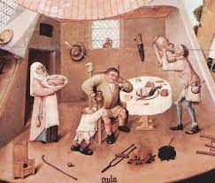

Historia
Las primeras descripciones de la anorexia nerviosa en el mundo occidental datan de los siglos XII y XIII.
Las primeras descripciones históricas de las personas que experimentan síntomas consistentes con los trastornos alimentarios modernos se remontan a la época helenística (323 a.C. - 31 a.C.) y medieval (siglo V d.C.).
Alrededor de este tiempo, la purificación a través de la negación de las necesidades físicas y el mundo material surgió como un tema cultural.
Hay un informe de una niña romana de clase alta de 20 años que se muere de hambre en busca de la santidad. Hay relatos adicionales de la Edad Media de ayuno autoinducido extremo que a menudo condujeron a la muerte prematura por inanición: la catherina de Siena es un ejemplo. La privación de alimentos fue vista como una práctica espiritual y las mujeres estaban desproporcionadamente afligidas. Algunos autores contemporáneos han apodado estos hábitos de ayuno "anorexia sangrada".
La motivación para este ayuno parece ser diferente a la unidad de la delgadez que domina las discusiones actuales sobre los trastornos de la alimentación. A pesar de esto, muchos creen que este es el mismo trastorno, simplemente asumiendo diferentes significados culturales basados en el clima sociocultural.

Las primeras descripciones fiables de la bulimia (atracarse y luego purgar mediante ejercicio, vómitos o laxantes) se encuentran entre personas ricas de la Edad Media, que vomitaban durante las comidas para poder consumir más. Aparentemente, a pesar de la creencia popular, este comportamiento no ocurría en la antigua Roma. El primer artículo clínico sobre la bulimia se publicó en 1979. La bulimia nerviosa es una variante ominosa de la anorexia nerviosa.
En 1973, Hilde Bruch publicó un libro con una serie de estudios de caso, llamado Trastornos alimenticios: Obesidad, anorexia nerviosa y la persona dentro. A medida que el trastorno llegó al conocimiento público en la década de los setenta, los casos reportados aumentaron y se extendieron más allá de la clase alta.
Todos los trastornos alimenticios siguen siendo relativamente raros. La anorexia afecta aproximadamente al 0,5% de las mujeres y al 0,1% de los hombres.
El médico estadounidense Hilde Bruch influyó enormemente en la comprensión de la anorexia nerviosa moderna. Publicó numerosos artículos y libros. Fue en ese momento que la anorexia se hizo más conocida.
También en el mundo árabe existen referencias a esta enfermedad. Así, en el siglo XI Avicena describe el caso del joven príncipe Hamadham, que está muriendo por negarse a comer.
Los casos de anorexia y bulimia aumentaron en las décadas de los setenta y ochenta y, aunque algunos dirán que alcanzaron su punto máximo en ese tiempo.
Desde el punto de vista de la Psiquiatría, el psicoanálisis fue la primera escuela que estableció interpretaciones causales. Freud, Abraham, Fenichel o M.Klein consideraron la A.N. una neurosis, relacionándola primero con la histeria (Freud) y después con la melancolía. También la fenomenología, las escuelas de medicina psicosomática, el conductismo y la psiquiatría biológica más recientemente han establecido hipótesis sobre un trastorno de cuya difícil ubicación nosológica y etiopatogénica puede suponer un ejemplo el caso de Ellen West, descrito por Binswanger, que fue diagnosticada de melancolía por Kraepelin, de esquizofrenia simple por Bleuler y Binswanger, y de "trastorno endógeno psiquiátrico y endocrinológico" por Zutt. La A.N. ha sido considerada, pues, como enfermedad adscrita al espectro depresivo, al histérico, al obsesivo-compulsivo, al psicótico y a otros, hasta que tomó entidad propia, aún cuando frecuentemente curse comórbida con otros trastornos.
Primer caso de los trastornos alimenticios: La bulimia nerviosa
Las primeras referencias médicas datan de 1708, y en los últimos 50 años se han publicado trabajos sobre la cuestión, proliferando los mismos en los últimos 10 años. Sin embargo, las conductas de purga, y la ingesta alimentaria abusiva y descontrolada se conoce bien desde tiempos remotos. Sabido es que en la civilización romana se utilizaba el vómito y otras formas de purga como forma de vaciar el contenido gástrico para continuar la ingesta masiva y descontrolada de alimentos. Este patrón ha continuado en muchos ámbitos cuyos partícipes, a lo largo de la historia han podido acceder a él (conviene no olvidar que, todavía, en muchos lugares del mundo, comer es un privilegio). Hoy día también se establece que la Bulimia tiene una entidad propia, diferenciada, con unos claros criterios diagnósticos, establecidos.
Los trabajos de Hilde Bruch en 1973, haciendo hincapié en la distorsión de la imagen corporal, de Russell (1970, 1977), concertando las hipótesis más biologicistas con las sociales y psicológicas y últimamente de autores entre los que destacan Garfinkel y Garner (1982), han contribuido a un establecimiento del modelo vigente de la A.N. como enfermedad diferenciada, de patogénesis compleja, con manifestaciones clínicas que son el resultado de múltiples factores predisponentes y desencadenantes, con arreglo a un modelo etiopatogénico bio-psico-social.
Sheehan, en 1938, establece claramente las diferencia entre A.N. y caquexia hipofisaria de origen isquémico, lo cual no impide que hasta los años 50 la A.N. sea considerada de origen endocrinológico.
Precisamente el hecho de ser la enfermedad psicosomática y somatopsíquica por antonomasia, ha hecho que, a lo largo de la historia de la Medicina, distintas especialidades (Neurología, Psiquiatría, Endocrinología) hayan establecido hipótesis causales, desde las más físicas hasta las más psicológicas. Ello explica las numerosas denominaciones (más de 25 distintas) que ha recibido y las distintas etapas por las que ha transcurrido su descripción e interpretación.
A pesar de que la historia de los trastornos alimenticios es muy limitada, hay algunas cosas que podemos rescatar de ellos. La historia de los trastornos alimenticios se remonta en la edad, media, principalmente en familias que en ese entonces poseían un poder alto, es decir, los trastornos alimenticios eran más comunes en las familias ricas de ese tiempo.
El mundo de los trastornos aliementicios es muy amplio, así que quédate a conocer más acerca de ellos.
Origen y evolución
El origen de los trastornos alimenticios pueden surgir de diferentes maneras, para descubrirlo has clic aquí
Síntomas
Los síntomas pueden variar desde el dolor de garganta, hasta síntomas más severos, como la neumonía y leucemia